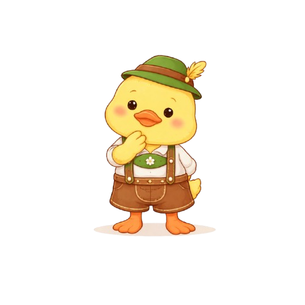
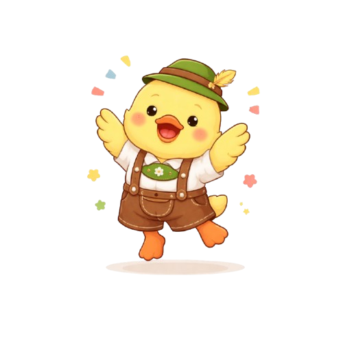

KUKI ACORDOU E VIU MUITOS ANIMAIS E ÁRVORES AO SEU
REDOR. EM QUE LUGAR DE BRUSQUE ELE ESTÁ?
PASSEANDO PELO LOCAL, KUKI VIU VÁRIOS BICHINHOS
DIFERENTES. O QUE ELE PODE ENCONTRAR NO PARQUE
ZOOBOTÂNICO?
KUKI SUBIU UM MORRO E VIU UMA IGREJA BEM BONITA.
QUE LUGAR FAMOSO DE BRUSQUE É ESSE?
DEPOIS DE DESCER O MORRO, KUKI ENTROU EM UMA CASA
CHEIA DE OBJETOS ANTIGOS E HISTÓRIAS. QUE LUGAR
É ESSE?
CONTINUANDO SEU PASSEIO, KUKI ENCONTROU UM PARQUE COM ESCULTURAS
GRANDES. QUE LUGAR DE BRUSQUE É ESSE?
KUKI OUVIU UMA MÚSICA BEM BONITA VINDO DA CIDADE. QUAL DESSES
OBJETOS FAZ MÚSICA?
SEGUINDO O SOM, KUKI ENCONTROU UMA FESTA CHEIA DE MÚSICA E ALEGRIA.
QUE FESTA FAMOSA DE BRUSQUE É ESSA?
NA FENARRECO, KUKI SENTIU UM CHEIRO DELICIOSO DE COMIDA. QUAL
COMIDA TÍPICA ELE ENCONTROU?
KUKI SENTIU UM CHEIRINHO DOCE NO AR. QUAL DOCE FAMOSO DE BRUSQUE
É ESSE?
KUKI DESCOBRIU QUE ESSE DOCE É TÃO ESPECIAL QUE TEM UMA FESTA SÓ
PARA ELE. QUAL É O NOME DESSA FESTA?
KUKI ENCONTROU UMA FOTO ANTIGA DE PESSOAS CHEGANDO EM
BRUSQUE. QUEM SÃO ESSAS PESSOAS QUE VIERAM MORAR NA
CIDADE HÁ MUITO TEMPO?
KUKI DESCOBRIU QUE MUITOS IMIGRANTES VIERAM DE OUTRO PAÍS.
QUE PAÍS É ESSE?
PASSEANDO PELA CIDADE, KUKI VIU MUITAS LOJAS CHEIAS DE ROUPAS.
QUE LUGAR DE BRUSQUE TEM MUITAS ROUPAS PARA VENDER?
KUKI VIU CARROS PASSANDO NA LAMA E FAZENDO UMA GRANDE AVENTURA.
QUE EVENTO DE BRUSQUE É ESSE?
DEPOIS DE CONHECER TANTOS LUGARES, KUKI CHEGOU EM CASA!
ONDE É A CASA DO KUKI?

PARABÉNS!
VOCÊ CONCLUIU A JORNADA DE KUKI POR BRUSQUE!